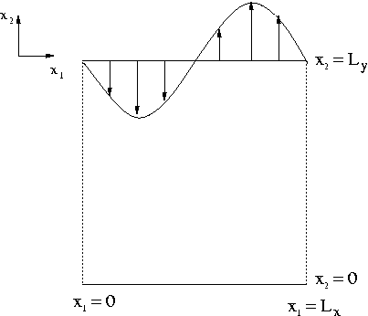
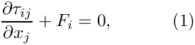
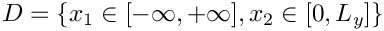
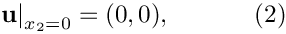
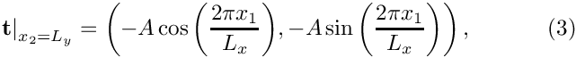
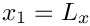
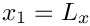
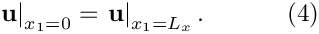
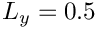

In this tutorial we re-visit a linear elasticity problem that we already discussed in detail in another tutorial: The deformation of an elastic strip loaded by a periodic surface traction. We demonstrate how to solve the problem with spatial adaptivity and explain how to apply periodic boundary conditions in such problems.
The example problem
We consider the same problem that we discussed in another tutorial:

Solve
Infinitely long strip loaded by a periodic traction.  in the domain , subject to the Dirichlet boundary conditions on the bottom boundary, the Neumann (traction) boundary conditions on the top boundary, and symmetry conditions at and , and ,  |
As before, we only discretise the domain over one period of the applied spatially-periodic traction and apply symmetry conditions at the left and right domain boundaries. Here we compute the solution with spatial adaptivity.
Results
The figure below shows a vector plot of the displacement field near the upper domain boundary. As already observed in the computations with a spatially uniform discretisation, the displacements decay rapidly with distance from the loaded surface. oomph-lib's automatic mesh adaptation therefore chooses a much finer discretisation near the upper domain boundary than in the interior, leading to a significant reduction in the number of unknowns in the problem.

The driver code
Most of the driver code is identical to that discussed in the tutorial in which we solved the problem without spatial adaptivity. We will therefore only discuss the parts of the code that require significant changes.
The problem class
The problem class is very similar to that used in the non-refineable version of the problem. As usual, we detach the face elements that apply the traction boundary condition before adapting the bulk mesh and then re-attach them afterwards. This is done by the functions delete_traction_elements() and assign_traction_elements() which are called from actions_before_adapt() and actions_after_adapt(), respectively.
The problem constructor – applying periodic boundary condition in spatially adaptive computations.
A key feature of this problem is the presence of the periodic boundary conditions (4) which require that the displacement field at the left boundary is the same as that on the right one. As discussed in another tutorial, such constraints can be imposed by the function
Once this function is called for a BoundaryNode, the BoundaryNode shares its Data with the Node specified as the argument to that function. This "wraps the solution around the domain".
In spatially adaptive computations a complication arises because the non-uniform refinement of a mesh creates so-called hanging nodes, i.e. nodes in a refined element that have no counterpart in an adjacent less-refined element. Within oomph-lib, such hanging nodes
are automatically constrained to maintain the inter-element continuity of the solution. The automatic detection of hanging nodes requires the identification of the elements' neighbours. This task is performed by neighbour finding routines that operate on a tree-(forest-)based representation of a mesh's refinement pattern; see the discussion in
the tutorial explaining oomph-lib's overall data structure. The representation of the initial, unrefined mesh as a TreeForest, required by these routines, is typically generated in the mesh constructor, using the function TreeBasedRefineableMeshBase::setup_tree_forest(). In the 4x4 mesh shown below this function would establish that within the Forest representing this mesh, the Tree associated with element 11 has three neighbours: Element 16 in the northern (N) direction; element 10 in the western (W) direction; element 7 in the southern (S) direction. There is no neighbour in the eastern (E) direction. If element 11 is refined but its neighbours are not, the hanging nodes on the edges with elements 7, 10 and 16 are automatically detected and constrained, maintaining the continuity of the solution across the element boundaries.
If periodic boundary conditions are applied, the "wrapping around" of the domain (indicated by the red line) means that element 8 must be regarded as the (periodic) eastern (E) neighbour of element 11. This information must be passed to the root of the Tree associated with element 11, using the functions TreeRoot::neighbour_pt(...) and TreeRoot::neighbour_periodic(...).
This is illustrated in the following code segment which shows the revised version of the problem constructor. We start by building the refineable mesh and set the spatial error estimator.
Next we declare all nodes on boundary 1 (the right boundary) to be periodic counterparts of the corresponding nodes on boundary 3 (the left boundary). (Here we exploit that within this particular mesh the boundary nodes on the left and right boundaries are enumerated consistently from top to bottom; this is not guaranteed to be the case – for a general mesh you will have to establish which node corresponds to which; see Comments and Exercises .)
We obtain the tree roots associated with the elements on the left and right boundaries, again exploiting the specific enumeration of the elements (from bottom left to top right, as in the sketch shown above).
Using this information it is easy to establish the (periodic) connections between the trees:
The rest of the problem constructor is identical to that in its non-refineable counterpart and is therefore omitted here.
Comments and Exercises
Comments
When setting up periodic boundary conditions, it is obviously important to correctly identify the corresponding nodes and elements on the mesh boundaries. The enumeration of these nodes and elements is typically performed in the mesh constructor. If you are unsure what conventions have been used (and are too lazy to read the source code), recall that you can use the function
to obtain a pointer to the j -th node on the Mesh's b -th boundary and
to obtain a pointer to the j -th element on the Mesh's b -th boundary.
Exercises
- Modify the problem constructor to check that the vertical coordinate of each periodic node matches that of its non-periodic counterpart.
- Confirm that the computed solution has a small discontinuity across the periodic boundary when you
- comment out the assignment of the periodic tree neighbours
- force the refinement of a single element next to the left boundary, say.
Note: To facilitate the visualisation of the discontinuity it is helpful to perform this test with the bilinear// Do selective refinement of one element so that we can test// whether periodic hanging nodes work: Choose a single element// (the zero-th one) as the to-be-refined element.// This creates a hanging node on the periodic boundaryVector<unsigned> refine_pattern(1,0);Bulk_mesh_pt->refine_selected_elements(refine_pattern);RefineableQLinearElasticityElement<2,2>, with a shallower domain (e.g.  ), and without any further spatial refinement (setmax_adapt=0inmain()).
Source files for this tutorial
- The source files for this tutorial are located in the directory:
demo_drivers/linear_elasticity/periodic_load/ - The driver code is:
demo_drivers/linear_elasticity/periodic_load/refineable_periodic_load.cc
PDF file
A pdf version of this document is available.